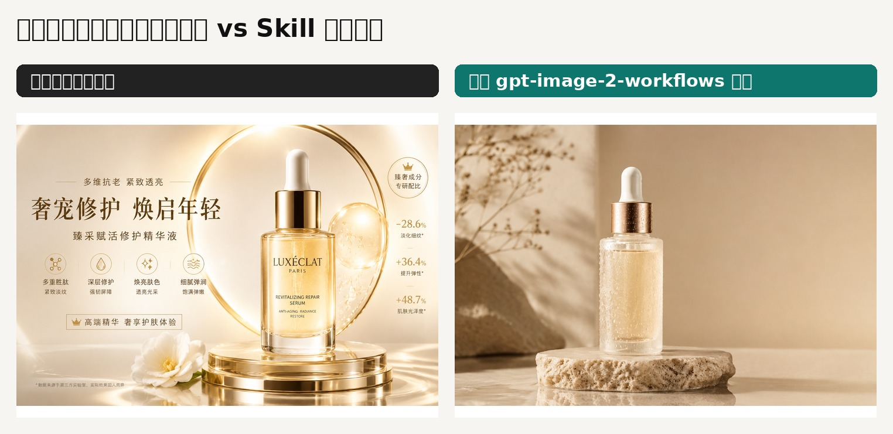

Case 01
护肤品电商广告图
优化版更适合作为无文字品牌底图；原始版更像自动生成的完整广告海报。
E-commerce HeroNo TextNegative Space

原始描述
生成一张高端护肤精华的广告图，适合电商首页。
优化策略
- 明确电商 landing page hero image。
- 指定磨砂玻璃精华瓶、暖米色摄影棚、柔和晨光。
- 要求无文字、无 logo、无人物、保留后期文案空间。
观察结论
原始图很完整，但会自动加品牌和卖点；优化图更干净、可控，更适合作为品牌可复用素材。
查看优化 prompt 摘要
Purpose: Create a premium skincare serum hero image for an e-commerce landing page. Scene: Warm beige studio background with soft morning light. Subject: One frosted glass serum bottle centered on a natural stone pedestal. Composition: Landscape website hero banner, product centered slightly lower, lots of negative space. Text Requirements: No text. Constraints: No watermark. No logo. No extra bottles. No hands. No people.